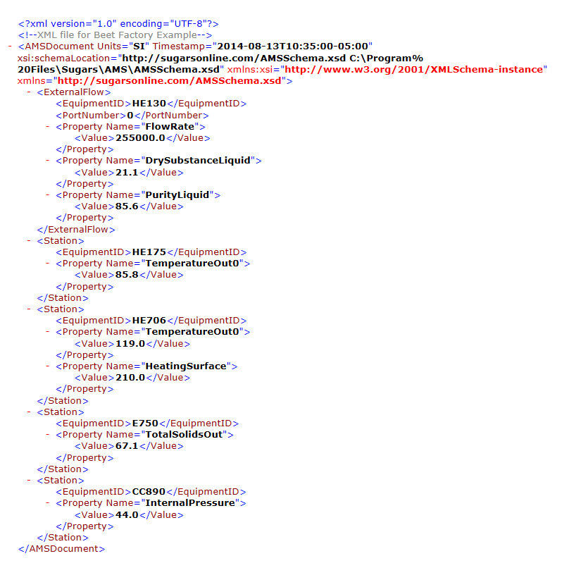
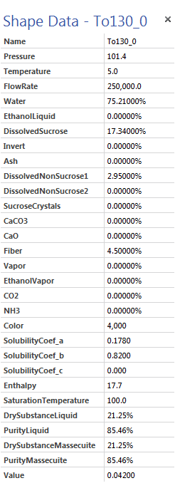
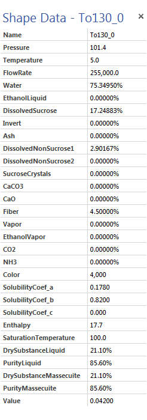
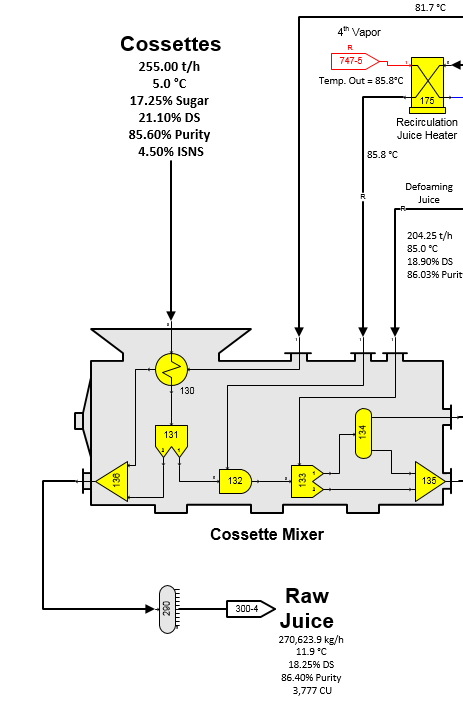
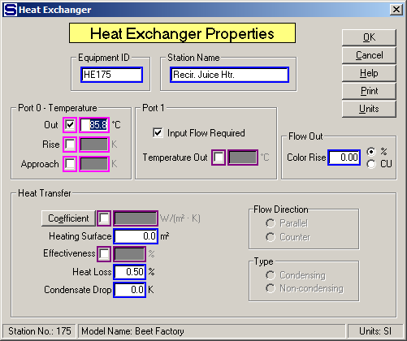
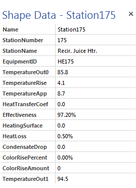
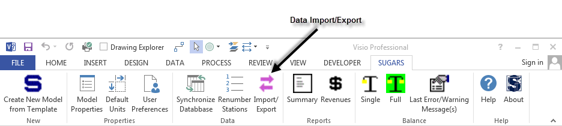
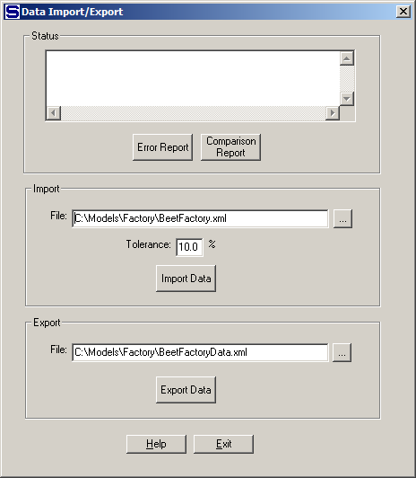
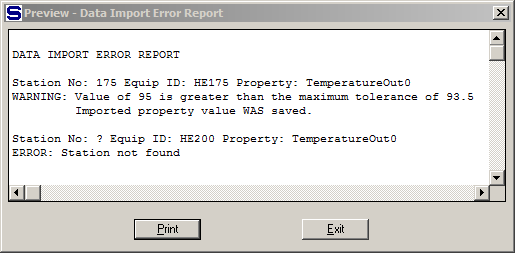
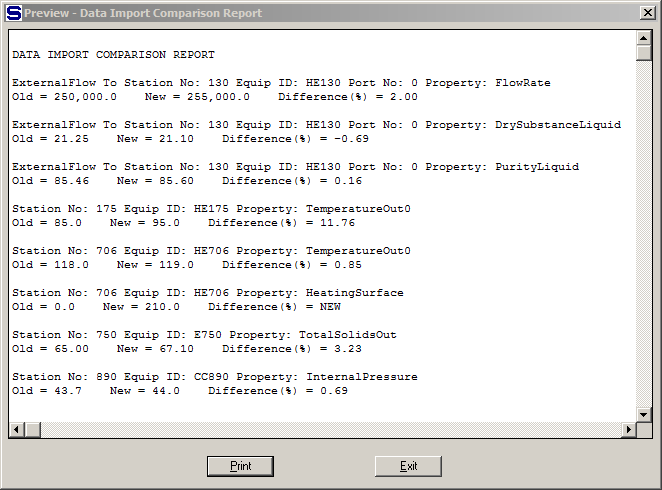

Importing data from and/or exporting data to an eXtensible Markup Language (XML) file is an optional feature of Sugars. With this feature, data for stations and external flows can be imported directly into the model and the model rebalanced to reflect the new conditions. An XML file with the new data is created manually or by another program; for example, the data acquisition software used by a factory. An example of an XML file for import into a model is shown in the figure below as displayed by Microsoft Internet Explorer.

All of the lines above the “<ExternalFlow>” line are the header for the file that identifies the schema (used to define the format of the XML file data), the date and time and the units used for data in the file. In this example, data is being imported to only one external flow. The new data is a flow rate of 255,000 kg/h, liquid dry substance (%DS) and liquid % Purity. When this data is imported, Sugars will convert the %DS and % Purity to new components for the flow; that is, it will determine the water, dissolved sucrose and non-sucrose components in the flow.
“xmlNotepad.exe” in the “C:\Program Files\Sugars\AMS” sub-directory or another xml editor can be used to modify the XML file. The values that can be imported are given in the “AMS Import PropertiesRev_.pdf” document located in the …\Sugars\AMS subdirectory which is the same as the Visio Shape Data for the flow except for the Name which cannot be imported. The figure below shows the Visio Shape Data for the external flow that goes to port 0 of the station with Equipment ID “HE130” (station no. 130 input port 0) before the XML data is imported into the model.

After the XML data is imported and the model is balanced, the new data is shown in the figure below. As shown, the new flow rate = 255,000, DrySubstanceLiquid = 21.10% and PurityLiquid = 85.60%. Also, new components were calculated for Water, DissolvedSucrose and DissolvedNonSucrose1. Pressure, Temperature, Fiber, Solubility Coefficients (a, b and c), Enthalpy and SaturationTemperature all remain the same.

The Cossettes flow to Station no. 130 input port 0 is shown in the figure below. The new values are displayed on the diagram for the Cossettes that flow into heat exchanger station 130. Only external flows that go to a station with an Equipment ID can have data imported or exported. Flows to or from stations that do not have an Equipment ID will not be able to import or export data. The same is true for stations; that is, stations must have an Equipment ID or data cannot be imported to the station and when data is exported from the model, stations without an Equipment ID will not have their data exported.

After the external flow in the XML file, there are four stations that have data being imported. These stations have Equipment ID’s: HE175, HE706, E750 and CC890.
Property data for the heat exchanger station no. 175 (Equipment ID: HE175) is shown in the figure below.

And, the Shape Data for this station is shown in the figure below.

Any of the Heat Exchanger Properties shown in the Shape Data can be defined in an XML file and then imported into the model; however, only the active fields will have an effect on the balance. For example, in station no. 175 above, data imported into the Port 0 - Temperature Out field will affect the balance, but data imported into the Rise or Approach fields will not. The same is true for all other stations available in Sugars.
Importing data into the model after the XML file is created is done by left clicking on the Import/Export icon on the SUGARS tab in Visio as shown in the figure below.

Left clicking on the Import/Export icon brings up the Data Import/Export screen as shown below.

Enter the path and file name of the XML file in the “File:” field and then left click the Import Data button to import the XML file data into the model.
Any errors encountered during the import will result in an error message in the “Status” window. Clicking on the Error Report button will display a report listing all of the errors and messages that occurred during the import. An example of an error report is shown below.

A comparison report can be shown by left clicking the Comparison Report button. This report lists all of the data that was imported and compares it to the data that was in the model before the import occurred. The percent change is listed for any data that changed. An example of the report is shown below.

Imported values that are outside of the minimum or maximum range as defined by the Tolerance % are noted on the Error Report and on the Comparison Report. These values will be used in the model unless the model is closed without saving it. However, large variations in the data may cause problems with rebalancing the model.